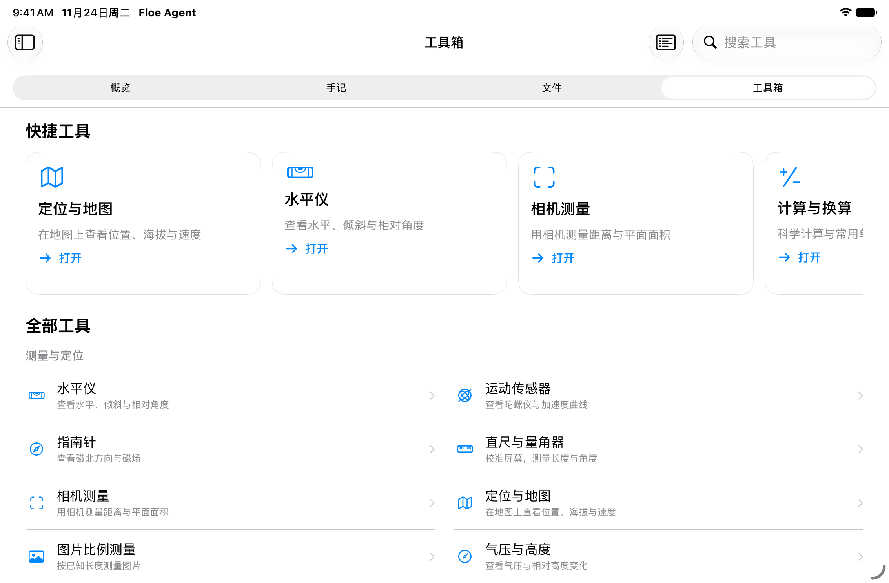
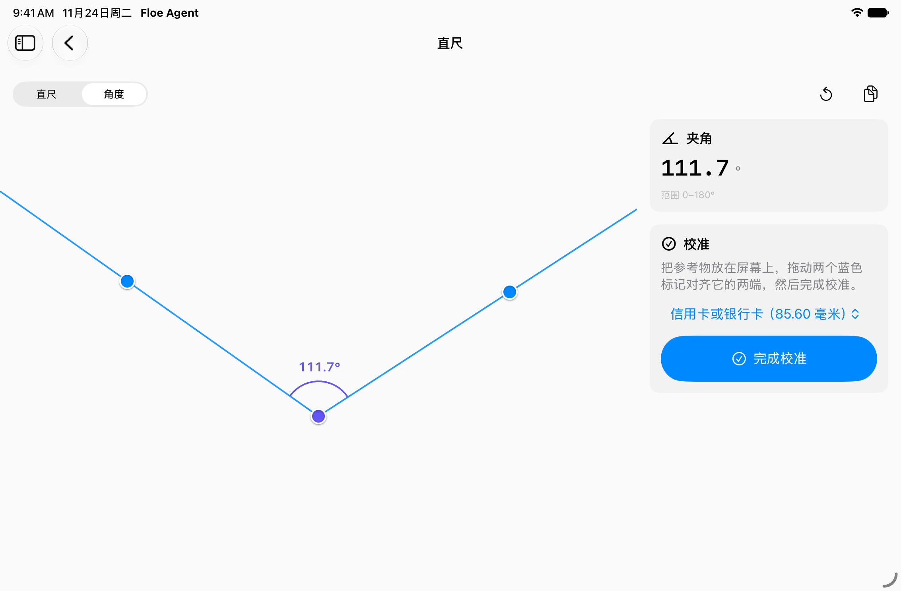

Raum- und Fachwerkbänke
Übersicht
简体中文 · Benutzerhandbuch · Schnellstart
Aufgabenbasierte Tutorials für die persönliche Bibliothek und dedizierte Werkbänke von Floe: Weltraumdateien und Werke, Meetings, Musik, Diagramme, Fertigung und 3D-Druck, die Netzwerk-Toolbox und Chemieprojekte. Für Modelle, Aufgaben, Notizen und Office-Grundlagen lesen Sie die Benutzerhandbuch Zuerst.
Welchen Build brauche ich?
Die Kanäle von Floe bieten verschiedene Funktionssätze. Die folgenden Etiketten geben die Release-Basis eines Workflows an; aktuelle Kanalversionen und Verifizierungsdaten werden in AKTUELLER_STATUS:
| Etikett | Wo bekommst du es? | Was es hier abdeckt |
|---|---|---|
| 1.7.74 | App Store, iOS/iPadOS 26+ | Die stabile öffentliche Veröffentlichung. Es gelten nur Abschnitte mit der Bezeichnung 1.7.74; Raum und die Fachwerkbänke sind noch nicht in diesem Build enthalten. |
| 1,8.5 Basislinie | Originalveröffentlichung; Folgen Sie dem Kanalstatus, wenn Sie ein neueres Installationsprogramm auswählen | Original-Tutorial-Baseline für Raum, Meetings, Musik, Diagramme, Herstellung und Druck, den Werkzeugkasten und Chemie. |
| 1.8.6 Ergänzungen | Veröffentlichtes unsigniertes IPA; TestFlight Verfügbarkeit ist separat | LaTeX, schematische/PCB, Biologie und CAD Engineering-Analyse Einträge sind enthalten; fortgeschrittene PCB und Simulationsarbeiten sind noch im Gange. |
| Andere spezialisierte Redakteure | Überprüfen Sie den ausgewählten Release- und Integrationsdatensatz | GIS, Schriftdesign, Notation und Image Playground haben einen separaten Umfang und eine separate Qualifikation; Entwicklungsänderungen werden nicht automatisch in Ihrem Installationsprogramm vorgenommen. |
Suchen Sie Ihre installierte Version unter Einstellungen → Diagnose & Info. Die Verfügbarkeit pro Kanal wird in Veröffentlichungs- und Installationsstatus; Die Freigabezentrum Listet jeden veröffentlichten Build auf.
1. Speicherplatz: Ihre Dateien und Werke — 1.8.5

New screenshots in this guide show Floe 1.8.72 (393) in the iPad Simulator.
Space ist die Seitenleiste für alles, was Sie persönlich in Floe besitzen: die Notizenbibliothek plus eine Bibliothek mit bearbeitbaren Werken und Dateien.
Choose a workbench in Übersicht based on what you want to make. Name the project and choose where to keep it. Use Continue working Oregon Files to reopen the project later.
| What you are working on | Which feature to use | Typical result |
|---|---|---|
| Class notes, reading annotations or reference material | Notizen. Keep handwritten and annotated pages in documents. | Notes you can keep adding to |
| Meeting audio, transcripts and decisions | Meeting Notes. Keep the audio, transcript and highlights together. | Recording, transcript and minutes |
| Evolving drafts, reference images and candidate designs | Canvas in Creative Mode. Arrange and compare objects on a board. | A board you can keep arranging |
| Processes, sequences, relationships or system structure | Diagram. Use shapes and connections to show relationships. | An editable diagram |
| Photo corrections, cover art or a transparent icon | Drawing / image. Work with text, strokes, selections and masks on layers. | An editable image project and a PNG or other image |
| Cutting clips, adding music and lining up subtitles | Video. Align picture, sound and captions on a timeline. | A video project and MP4 |
| Arranging melodies or keeping musical parts separate | Music project. Arrange notes, audio and instruments on tracks. | An editable song, audio or MIDI |
| Plans, parts, floors or circuits | 2D Design, 3D Design, Building Project or Electronics Design. Choose according to whether you are working with dimensions, solids, storeys or circuits. | A drawing, solid, building project, schematic or PCB |
| Viewing geographic data or inspecting regions by field | Map Editor. Work with layers, features, attributes and coordinate systems. | A map project or layer data |
| Typesetting a paper, equations and references | LaTeX document. Edit the source and compile to inspect the result. | LaTeX project and PDF |
| A quick calculation, conversion or measurement | Toolbox. Open the utility for the immediate job. | A calculation, dimension or angle |
Erster Rundgang:
- Öffnen Bereich Aus der Seitenleiste. Es hat vier Abschnitte: Übersicht, Notizen, Dateien und Toolbox.
- Die Übersicht zeigt Schnellzugriffseinträge, angeheftete Werke, Ihre Ordner und „Arbeit fortsetzen“ (zukürzlich geöffnete Notizen und Werke).
- Dateien listen Ihre Werke auf. Wechseln Sie zwischen Liste und Miniaturansichten und filtern Sie nach Typ: Dokumente, Zeichnung/Bilder, Video oder CAD.
- To start a particular kind of work, open its shortcut or workbench under Übersicht. To choose a destination first, open the folder under Files, then choose a type from +. Enter a name, check Location, and tap Create. Start blank notes and meetings from Notes → +.
- Verwenden Sie den Import, um vorhandene Dateien einzuführen, oder Andere Standorte durchsuchen... Um alle Arbeitsbereichsdateien, archivierte Chat-Dateien und aufbewahrte (wiederhergestellte) Dokumente zu erreichen. Gelöschte Werke können wiederhergestellt werden von Kürzlich gelöscht.
Eigentum und Sparen:
- Werke werden in Ihrer persönlichen Bibliothek auf dem Gerät gespeichert. Sie gehören zu keiner Chat-Aufgabe: Das Löschen eines Chats löscht nie ein Werk, und das Löschen eines Werkes berührt niemals Aufgaben- oder Projektdateien. Exportieren Sie alles Wichtige, bevor Sie es löschen.
- Redakteure sparen in der Arbeit selbst. Schließen und öffnen Sie ein Werk von "Arbeit fortsetzen" erneut, um den letzten Status zu bestätigen; Wiederherstellungskopien bleiben unter "Gespeicherte Dokumente", bis Sie die gespeicherte Datei akzeptieren.
- Eine Arbeit kann ihr eigenes Gespräch mit dem Assistenten führen (Arbeitsassistent oder Besprechungsassistent für Meetings). Dieses Gespräch ist Teil der Arbeit und speichert nicht gesendete Entwürfe; das Gewähren des Assistentenzugriffs auf ein Werk öffnet keine andere Datei.
2. Meetings: Aufzeichnung, Transkription, Protokolle - 1.8.5
Meetings kombinieren ein persönliches Notizbuch, Live-Aufzeichnung, Transkription und KI-Protokolle in einer Arbeit, die über Notes geöffnet wird.
Erstes Treffen:
- Öffnen Space → Notes → + → Meeting Note, type a name and create it. In landscape, My Notes is on the left. Switch among Transkript, Höhepunkte Und Meeting Assistant on the right.
- To capture a meeting, use Start Recording at the bottom right. To work with a file, open Recordings and Media → Import Audio or Video. Enable live transcription if needed, or transcribe a saved recording later.
- Review the transcript under Transkript and organize minutes and to-dos under Höhepunkte. Review highlights before inserting them into your notes.
- Einschalten Automatische KI-Minuten Um das Protokoll aus dem Transkript auf dem neuesten Stand zu halten, oder bitten Sie den Meeting-Assistenten, Fragen zu diesem Meeting zu beantworten und Notizen und To-Dos zu organisieren. Nicht gesendete Entwürfe werden aufbewahrt.
- Exportieren Wort oder PDF Text Minuten Über das Menü "Protokollvorlage" und senden Sie Folgeaktionen zurück in Ihren Aufgabenablauf.

Kontinuierliche Aufzeichnung in neueren Builds: Pause und Wiederaufnahme innerhalb der Aufzeichnungszeitleiste desselben Meetings. Spielen Sie die Aufnahme nach Abschluss der Aufnahme wieder und tippen Sie auf ein Transkriptsegment, um nach seiner Zeit zu suchen. Benennen Sie vorhandene Sprecher um oder führen Sie Identitäten zusammen, die sich auf dieselbe Person beziehen; die Trennung von Sprechern hängt vom ausgewählten Erkennungsdienst ab. Öffnen Sie das Meeting erneut, um die Aufzeichnung, die Zeitstempel und das korrigierte Transkript zu überprüfen.
Play an imported recording. In Recordings and Media, select the imported file and tap Play Full Recording. The player appears at the bottom of the meeting screen. Pause or scrub to review it. In the transcript, select a timestamped segment to jump to its position. Check the transcript, highlights and action items before exporting minutes.

Grenzen: Aufzeichnungen bleiben standardmäßig auf dem Gerät; Cloud-Transkription verwendet einen Dienst, den Sie ausdrücklich auswählen und von diesem Anbieter in Rechnung gestellt wird. Die Transkriptionsqualität folgt Ihren Erkennungseinstellungen (siehe Benutzerhandbuch §16).
3. Musikprojekte — 1.8.5
Space Music Works hält Arrangement-, Keyboard-, Mixer- und DJ-Workflows in einem Projekt.
Erstes Projekt:
- Erstellen Sie unter Leertaste → Dateien eine Musik Arbeit und nenne es.
- Die Werkbank bietet Arrangements und spezielle Oberflächen: Klavierrolle, Schlagzeuggitter, Keyboard und DJ-Decks, mit einem Mixer und Effekten für Tracks.
- Importieren Sie Audio- oder MIDI-Material oder bitten Sie den Assistenten, Änderungen vorzuschlagen; jeder Vorschlag zeigt, was sich ändert, bevor Sie ihn annehmen.
- Das Speichern erfolgt automatisch in der Arbeit. Rendern, wenn Sie eine Audiodatei wünschen, dann die Quittung mit der tatsächlich gerenderten Datei vergleichen und sie aus dem Werk freigeben oder exportieren.
Musik in diesem Test-Update: Wechseln Sie in der Partitur zwischen Staff- und Numbered-Notation, während Sie dieselbe Partitur bearbeiten und speichern. Öffnen Sie Performance Sounds, um synthetisierte Instrumentenklänge für jeden Teil auszuwählen. Führen Sie Audio-Renderings durch und fügen Sie Audio hinzu, fügen Sie eine neue Spur am aktuellen Wiedergabekopf ein und kehren Sie nach Abschluss zum Arrangement zurück. Gewöhnliche Wiedergabe ist für das Vorsprechen. Wechseln Sie zurück zu Staff, um komplexe Markierungen in der nummerierten Ansicht zu sehen.
Nehmen Sie vom Wiedergabekopf in neueren Builds auf: Verschieben Sie den Wiedergabekopf auf den beabsichtigten Start, wählen Sie Audio- oder MIDI-Aufnahme und führen Sie dann aus. Vorhandene unstummgeschaltete Titel spielen daneben und ältere Clips bleiben erhalten. Stoppen Sie, hören Sie den neuen Clip auf derselben Zeitleiste an, speichern Sie sie und öffnen Sie sie erneut, um seine Position zu überprüfen. Arrangement-Aufnahme, Asset-Vorschauen, Überwachung und DJ-Aufnahme haben ihre eigenen Kontrollen; bestätigen Sie Stop auf der entsprechenden Oberfläche, bevor Sie gehen.
Die Tastatur verwendet die verfügbare Höhe für ihre Tasten. Auf weiten Bildschirmen öffnet oder komppiert der rechte Inspektor "Einblenden" oder "Inspektor ausblenden". Erweitern Sie den unteren Editor für einen größeren Leistungsbereich.
Grenzen: KI-unterstützte Bearbeitung verwendet Ihre konfigurierten Modelle; Wiedergabe und Rendering werden auf dem Gerät ausgeführt und folgen den tatsächlichen Fähigkeiten des Projekts.
4. Diagramme und die gemischte Leinwand - 1.8.5
Diagram works well when the sequence or relationship matters. For an approval process, give each action a shape and connect the shapes in order. Reopen the work from Space → Files to check that its shapes and links are complete. Review the assistant's proposed changes before applying them.
Creative Mode Canvas keeps notes, images, documents and options for a topic together. Select an object to edit its content, or move it to rearrange the board. When comparing several image or drawing versions, keep the deliverables in their workbenches and use the canvas to record references and comparisons. See the free-form editing walkthrough.
5. Fertigung und 3D-Druck — 1.8.5
Bearbeitung und Druck von einem CAD-Dokument öffnen Herstellung Eintrag.
Bearbeitungs-Walkthrough:
- Öffnen Sie Ihr 2D/3D CAD-Design und geben Sie die Fertigung ein. Wählen Sie zuerst die Maschine.
- Legen Sie Lager, Koordinaten und Operationen fest; der Assistent kann das aktuelle Objekt zurücklesen und Operationen innerhalb der Berechtigungen der Aufgabe vorschlagen.
- Führen Sie die Vorschau aus, um zu sehen, wie Material entlang des Werkzeugpfads entfernt wird; implementierte Kollisionsprüfungen werden während der Ausführung gemeldet.
- Speichern Sie das Ergebnis, exportieren Sie STL oder den Werkzeugpfad und öffnen Sie das gespeicherte Ergebnis zur Überprüfung erneut. Manufacturing-Cell-Programme (Multi-Spindel/Multi-Turret) werden unabhängig voneinander gespeichert und können später nachgelesen werden.
3D-Druck-Walkthrough:
- Bereiten Sie aus einem CAD-Design oder einer Datei ein Druckprojekt vor; Floe kopiert die aktuelle Geometrie hinein.
- Ordnen Sie Modelle auf Platten an, fügen Sie Teile hinzu oder duplizieren Sie sie, und passen Sie die Einstellungen pro Platte wie Schichthöhe und Füllung an.
- Wählen Sie eine Maschinenkonfiguration: Bettgröße, Koordinatenorigine, Düsenverschiebungen, benutzerdefinierter Start-/End-/Werkzeugwechsel-G-Code und Harzplattform-Ausrichtung für Harzdrucker.
- Slice; ein abgeschlossenes Slice öffnet die Vorschau automatisch, und das gespeicherte Ergebnis bleibt an diese Parameter gebunden. Exportieren Sie den G-Code, den Ihr Drucker erwartet, und überprüfen Sie ihn in Ihrem Slicer oder Host.
Grenzen: Bearbeitungsvorschauen melden nur implementierte Prüfungen - sie sind keine vollständige Zertifizierung der Maschinensicherheit. Native USB-Druckertreiber sind in diesem Build nicht enthalten; verwenden Sie den normalen Übertragungspfad Ihres Druckers. Der physische Druck und die Bearbeitung unterliegen weiterhin den tatsächlichen Fähigkeiten und Sicherheitsregeln Ihrer Maschine.
6. Netzwerk-Toolbox - 1.8.5
Öffnen Space → Toolbox. Choose a shortcut at the top, use the categories below, or search by tool name in the upper right. Toolbox holds both network sessions and day-to-day measurement tools.

- Diagnose: Ping, Traceroute, DNS, Port-Checks, LAN-Discovery, Wi-Fi-Informationen und Roaming-Checks. Wi-Fi-Namen und BSSIDs können nur mit Systemautorisierung gelesen werden; nichts wird gescannt, bis Sie es starten.
- Verbindungen und Sitzungen: HTTP, WebSocket- und MQTT-Clients, ein serieller Assistent (TCP, UDP oder Bluetooth; USB benötigt ein unterstütztes iPad und Treiber, die noch nicht geliefert wurden), sowie Terminal- und VNC-Remote-Arbeitsbereiche.
- Analyse: Capture-Browser mit Packet-Capture-Import (PCAP/PCAPNG); KI-Analyse berichtet über den Fortschritt, kann gestoppt werden und läuft ehrlich ab.
- Dienstprogramme: JSON-Formatierung, Codierungskonvertierung, QR-Codes und Prüfsummen.
Mess- und Alltagswerkzeuge in neueren Builds: Wählen Sie ein Werkzeug aus den streichbaren Top-Einträgen, Kategorien oder der Suche; die vollständige Liste bleibt unten.
- Niveau, Bewegungssensoren, Kompass, Druck und Höhe: Beginnen Sie, Messwerte anzuzeigen, verwenden Sie die angebotene Null, sperren oder Aufzeichnungssteuerelemente und stoppen Sie die Erfassung, wenn Sie fertig sind. Kompass zeigt magnetischen Norden; druckbasierte Höhe zeigt relative Veränderung.
- Lineal & Protraktor, Kameramessung, Fotomessung: Kalibrieren Sie zuerst das Bildschirmlineal gegen ein echtes Objekt. Die AR-Messung benötigt unterstützte Hardware. Stellen Sie in einem Foto eine bekannte Referenzlänge ein, bevor Sie Längen, Winkel oder Flächen auf derselben Ebene messen, und exportieren Sie dann bei Bedarf Anmerkungen. Überprüfen Sie die Kalibrierung erneut, nachdem sich das Fenster oder das Display geändert hat.
- Rechner & Konverter, Standort & Karte: Ausdrücke auswerten oder Einheiten austauschen und Ergebnisse kopieren. Nachdem Sie den Standortzugriff gewährt haben, überprüfen Sie die Position und die Genauigkeit und speichern oder teilen Sie einen Ort explizit oder senden Sie ihn an Notizen.
- Klanganalyse, Lupe & Licht, Scannen & Erkennen: Starten Sie das Mikrofon oder die Kamera explizit. Überprüfen Sie die relativen Audiopegel und das Spektrum, zoomen oder frieren Sie eine Ansicht ein oder scannen Sie Codes und Text und exportieren Sie die Ergebnisse. Die Audiomessungen sind nicht kalibriert mit dem Umgebungsschalldruck.
- Stoppuhr und Timer: Runden aufzeichnen, benannte Countdowns verwalten und Systemalarme zulassen, wenn Sie dazu aufgefordert werden. Siehe Benutzerhandbuch §17 für mehrstufige Aufgaben-Timer; Systemalarme und die Folgeausführung des Modells sind separate Ergebnisse.
Eine Messung deckt einen Endpunkt und Pfad ab, nicht Ihr gesamtes Netzwerk. Berichte exportieren nur das, was Sie auswählen.
Calculate, convert and measure
- Öffnen Calculator and Conversion, enter
2×3in Calculator, and tap Calculate. The result, 6, also appears in History. Use the copy icon beside the result when you need it elsewhere. - Öffnen Unit Conversion, Wählen Length, then millimetres and centimetres. Entering 1 gives 0.1 cm. Swap the units with the arrows to see 1 cm become 10 mm.
- Return to Toolbox and open Ruler and Protractor. In Angle, drag the handles and read the angle between the lines. Before measuring a real length on screen, align the blue marks to a reference of known size, then finish calibration. Before calibration, length appears in screen points.


7. Chemieprojekte — 1.8.5
Erstellen Sie eine Chemieprojekt Aus dem Weltraum → Neu. Der native Struktureditor speichert Strukturen in das Projekt, Berechnungsdatensätze bleiben daran angehängt, und Strukturbilder können über Notes referenziert werden. Starke Neuberechnungen werden in Ihrer konfigurierten Ausführungsumgebung ausgeführt - überprüfen Sie die Umgebung vor einem langen Auftrag.
<a id="8-kommt-im-nächsten-Update--next-update-nicht-in-public-builds"></a>
8. Zusätzliche Werkbänke und Bauanforderungen
1.8.6 Versionshinweise Diese Ergänzungen im veröffentlichten Installationsprogramm aufzeichnen:
- LaTeX - Eine Projekt-Workbench, Source Folding und PDF-Volltextsuche, mit beibehaltenem Lese-/Suchzustand über Vollbildänderungen hinweg.
- Elektronik/PCB — Schematische/PCB-Bearbeitung, Canvas-Interaktion, Design-Regel-Prüfungen und Synchronisation; PCB-zu-schematische Aktualisierungen enthalten eine Differenzvorschau und Bestätigung.
- Biologie und CAD Ingenieuranalyse — Zusätzliche native Workbench-Einträge in Space, mit Bearbeitungs-, Vorschau- und Speicher-/Wiedereröffnungsarbeit, die im Veröffentlichungsumfang enthalten sind.
Einige erweiterte PCB- und Simulationsoperationen sind noch in der Entwicklung; native serielle USB-Treiber sind nicht in diesem Build enthalten. Diese Versionshinweise belegen nicht, dass jede Spezialfunktion oder eine spätere Quelländerung versandt wurde.
Für GIS, Schriftdesign, Notation und Image Playground, überprüfen Sie die Integrationsplan für Fachredakteur, Aktive Integrationsdatensätze Und die ausgewählten Versionshinweise. Die Verfügbarkeit ist funktionsspezifisch; die Quellenintegration allein begründet keine Bereitstellung.
Start a sketch in 3D Design
- In Space → Overview, open 3D Design, name it, and check its location. Open Sketch on the left for lines, rectangles, circles and other tools.
- Wählen Sketch → Rectangle and select a reference plane when prompted. To draw with your finger, enable Touch drawing using the hand icon on the left, then drag between opposite corners on the grid. Check that the four edges close. If dragging pans the view, check the switch, the rectangle tool and the current plane.
- Wasserhahn Exit Sketching and select the interior of the closed profile. Under Features → Extrude, set the distance to
2 mm, Wählen New Body and confirm. A5 × 3 mmrectangle should produce a solid2 mmthick. If you cannot select the interior, return to the sketch and look for gaps or overlaps. - Close and reopen the project by name in Space → Files to confirm the solid was saved. For a mesh delivery, use the share icon at the top and choose STL → Save to Files. Check its dimensions and orientation in the receiving app. Keep the 3D project for further editing. See the unified 3D workbench for more.


Choose the right workbench
| What you want to work on | Where to start in Space | What to check |
|---|---|---|
| Floor plans with rooms | Overview → Building Project. Choose a storey before editing walls, rooms or drawings. | Units, the selected storey, and which objects belong to it after reopening. |
| 2D lines and dimensions | Overview → 2D Design, or open an editable DXF or DWG from Files. | Selected layer, objects, dimensions and units. Save and reopen. |
| A typeset paper | Overview → LaTeX Document. Edit the project source and compile the PDF. | Build log and PDF pages. Keep both the project and the delivery PDF. |
| Schematics and PCB layouts | Files → + → Electronics. Edit the schematic before reviewing the component and net changes in PCB. | Review sync differences before applying and run design rule checks after routing. |
| Map data | Files → … → Import geographic data…, or choose Map Editor from the new-project menu. | Select a specific layer and check its coordinate system, visibility, attributes and exported geometry. |
| A molecule for a lesson | Overview → Chemistry Project. Open or draw a molecule in the structure editor. | Structure diagram, saved project and the status of any calculation. |
| Sequence material for teaching | Overview → Biology Project. Open a project and inspect a record or annotations. | Record name, annotation range, and which file is the original or an exported copy. |
Available formats and workbench options depend on the installed build.
2D Design: draw a rectangle and deliver a DXF
- Create a drawing in Space → Overview → 2D Design. Check that the upper-right unit is mm, enable Touch drawing on the left, and choose Rectangle. Drag between two corners on the grid. The example measures
6 × 4 mmwith a20 mmperimeter. If the size differs, check the units, snapping and all four corners. - Use the share icon at the top, choose DXF, and choose a destination in Files. Open the DXF in the receiving CAD app to check that the profile is closed and its dimensions match the project.
- Wasserhahn Fertig, then reopen the drawing by name in Space → Files and check its four edges. Use this drawing when continuing in Floe.

Maps: import, edit attributes and export GeoJSON
- Choose a GeoJSON file in Space → Files → … → Import geographic data…. Select its layer on the left, then tap Fit layer in the map toolbar. A small region may be hard to see at the initial world scale. Check that the layer is visible and contains features, then verify its coordinate system.
- Öffnen Table, select a feature and tap the field to edit. Press Return to apply the value and wait for it to save. For a test polygon with a
namefield, give it a new name while keeping its boundary. Reopen the project and the attribute table to confirm the value persisted. - Touch and hold the specific layer row and tap Export layer to open Export data / project. Choose GeoJSON and turn off Include all vector layers when you only want the selected layer. With the coordinate-system field left blank, GeoJSON uses EPSG:4326. Name the export and tap Anwenden. Open the result and check the feature count, attributes and geometry.
- If the import reports Unexpected EOF, export a complete file again from the original GIS project or check whether the copy was truncated, then retry. Once it succeeds, open the new project in Space → Files to verify the layer.


Sparen, exportieren und helfen
- Bestätigen Sie die Speicherungen, indem Sie die Arbeit schließen und erneut öffnen; bewahren Sie Wiederherstellungskopien auf, bis die akzeptierte Datei ausgecheckt wird.
- Exportieren oder vor dem Löschen freigeben; gelöschte Werke können von kürzlich gelöscht nur auf demselben Gerät wiederhergestellt werden.
- Fragen und Fehlerberichte: GitHub Probleme (Primärer Supportkanal); Beschreiben Sie den Build, das Gerät und die Schritte. Diagnose-Uploads sind freiwillig und enthalten keine Garantie für die Reaktionszeit – sie enthalten niemals Passwörter, Schlüssel oder private Dateien.